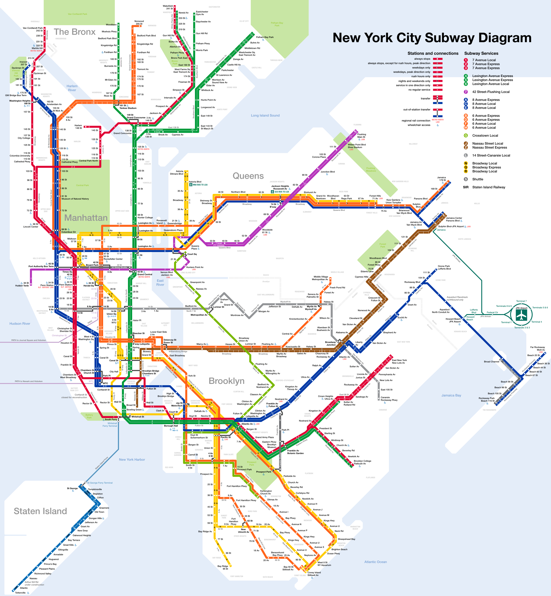
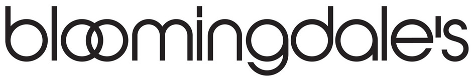
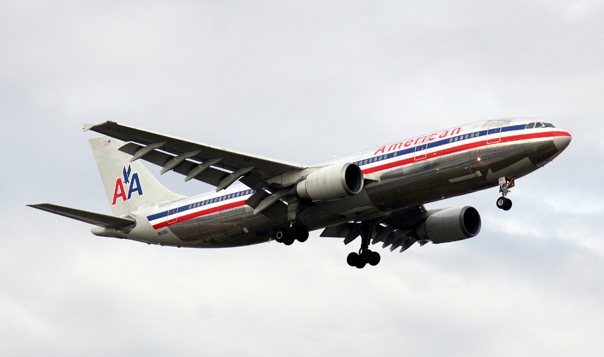
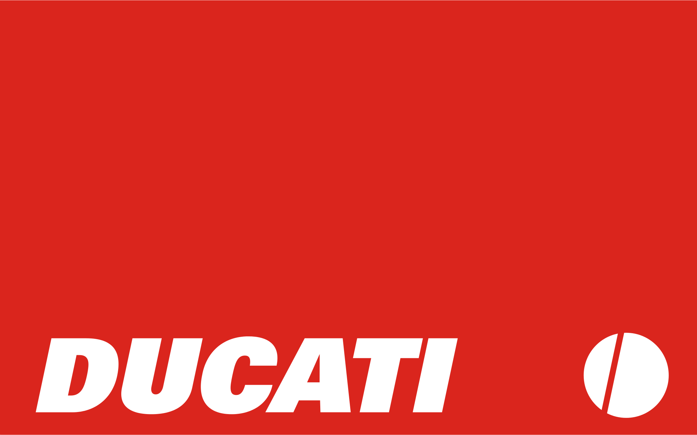

In 1972, Vignelli's NYC Subway Map became a landmark of Modernist information design. Vignelli himself prides it as one of his greatest creations.
In previous versions of the Subway Map, signage was constantly out of date, and civilians found it difficult to navigate. These issues became shockingly clear during the 1964 World's Fair, which brought in over 52 million visitors.
Vignelli's work, staying true to his entire design philosophy, followed a Modernist approach. This style emphasized a minimal aesthetic, combined with bold and narrow typefaces. Above all, Modernism stressed the use of basic geometry, and simple colouring. These principles led to an extremely well-designed Map.
In 1972, Vignelli's NYC Subway Map became a landmark of Modernist information design. Vignelli himself prides it as one of his greatest creations.
In previous versions of the Subway Map, signage was constantly out of date, and civilians found it difficult to navigate. These issues became shockingly clear during the 1964 World's Fair, which brought in over 52 million visitors.
Vignelli's work, staying true to his entire design philosophy, followed a Modernist approach. This style emphasized a minimal aesthetic, combined with bold and narrow typefaces. Above all, Modernism stressed the use of basic geometry, and simple colouring. These principles led to an extremely well-designed Map.
Other Works

Bloomingdale's

American Airlines

Ducati